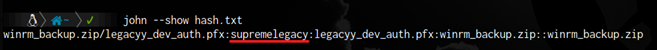
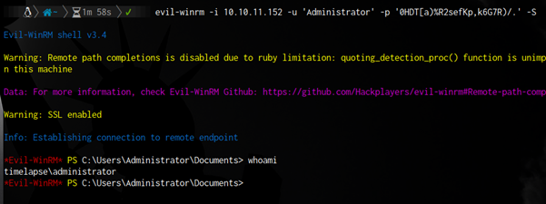

Empezamos tramitando una petición icmp o ping para verificar si tenemos conexión con la máquina.
$ ping 10.10.11.152
El primer escaneo que utilizaré va ser el siguiente:
Luego de saber los puertos que están abiertos, verificamos la version y el servicio que están
corriendo en cada puerto:
En nuestro escaneo podemos ver de primeras que smb2 está open.
así que podemos usar smbclient para ver carpetas compartidas.
Pero además de smbclient, podemos usar el “smbmap” para verificar donde tenemos acceso y donde no.
Ya que sabemos cuáles podemos leer, fui a “Shares” y explorando descargue un archivo .zip, El cual tenía contraseña, entonces decidí intentar crackear la contraseña.
Con la herramienta “john the Ripper” primer convertí el archivo .zip a un hash.
$ Zip2john “archivo.zip” > hash.txt
Luego utilicé john con un diccionario de palabras para poder descifrar la contraseña.
$ John -w=/usr/share/wordlists/rockyou.txt hash.txt
Y este fue el resultado:

Y me descargó un binario.
Lo primero que pensé fue en ejecutarlo, pero como se puede ver la extension “.pfx” no se ejecuta de la misma manera, así que investigué un poco.
Al usar el comando investigado para extraer la key, me pide una contraseña, la cual podemos crackear usando una herramienta llamada “crackpkcs12”.
Que se utiliza de la siguiente manera:
Ahora que tenemos la contraseña podemos extraer la clave ssl.
Si le hacemos un cat al archivo key.pem, tenemos una clave privada para un usuario ssh.
Pero ademas de la key, tenemos el certificado.

Ahora que tenemos una clave privada y un certificado, podemos utilizar una herramienta llamada, “evil-winrm” para conectarnos de forma directa.
En el escritorio de nuestro usuario actual, podemos encontrar la user.txt
Ahora tenemos que escalar privilegios.
Explorando e investigando un poco…
Existe una ruta que guarda comandos utilizados por la powershell anteriormente.
Si buscamos la ruta anterior, se muestra los siguiente, Nos muestra una contraseña en texto claro y un usuario.
Como tenemos unas credenciales, podemos verificar con el comando “net user svc_deploy”, ver si el usuario esta en el
grupo “Remote Management Use” para poder conectarnos con evil-winrm.
Lo cual funcionó.
Ahora que estamos en otro usuario con un poco mas de privilegios, podemos usar el siguiente script para dumpear contraseñas.

Lo descargo en mi maquina atacante y abro un servidor http para pasarlo a la maquina víctima.
Después de tenerla en la maquina victima solo tenemos que usar el comando Get-LAPSPasswords.
Como podemos ver, nos muestra la misma contraseña varias veces, al Host dc01.timelapse.htb
Podemos verificar si este usuario es el administrador y si esa es su contraseña.

Como podemos ver estamos como adnimistrador.
Ahora solo tenemos que buscar la flag.
Que se encuentra en el escritorio del usuario TRX.
Information
- #Pentesting #Cybersecurity #RedTeam
- Machine: TimeLapse
- Difficulty: Easy
- Plataforma: HACKTHEBOX
- Sistema Operativo: Windows
- Skills: SMB Enumeration Cracking ZIp Password Protected File (fcrackzip) Cracking and reading .PFX File (crackpkcs12) Gaining SSL access with Evil-WinRM Information Leakage - Reading the user's Powershell history (User Pivoting) Abusing LAPS to get passwords (Get-LAPSPasswords.ps1) [Privilege Escalation]